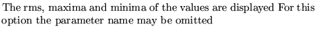
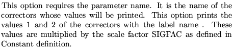
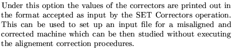

Next: Show or save misalignment
Up: Operations used in conjunction
Previous: Set misalignment of elements
This operation displays the values of the correctors and gives an
elementary statistical analysis of their values
Input format
SHO Correctors
option [name]
Parameter definitions
option determines the information to be printed out.
1 
2 
3 
Examples
The example comes from demo7.
SHO CORRECTOR VALUES
1,
Dobrin Kaltchev
2004-10-20